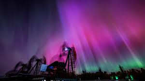

meta charset='UTF-8'
meta< name="viewport" content="'width=device-width", =0.1
tittle< fun facts about Aurora Borelis>
HTML Links
Visit Aurora Borelis!
Aurora Borelis all you need to know!
 Galileo Galilei, the infamous Italian philosophwidther and astronomer, the first to name the Northern lights Aurora Borealis
We are not the only planet which Aurora visits it can reach to planets such as Jupiter, Uranus, Mars, Saturn and Neptune.
Different ions / different heights = different colors for example.Oxygen in the upper part of the atmosphere can cause green or red light.
Red light can form in the lower atmosphere when electrons in collide with nitrogen protons.
Blue light is fairly rare and is caused by sunlight hitting the top of the northern lights.
Auroras constantly change shape.
The oldest known record of an aurora dates back to 2600 BC.
sources used-https://www.norwayexcursions.com/en/blog/7-fun-facts-about-aurora-borealis/?srsltid=AfmBOorKAp7U7o9YE6eUWrVG_WwYkuiOSHVibsN1Cf7cge10Bt3XT3UX